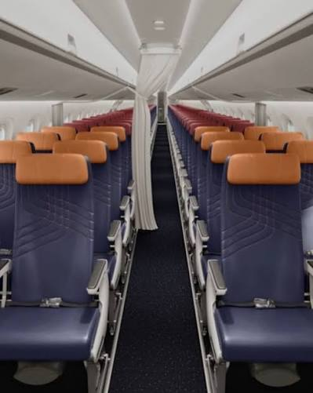

Antecipe a demanda. Planeje melhor.
Visualize o histórico de ocupação e o comportamento dos passageiros em diferentes rotas.
Encontre rotas com baixa ocupação ou períodos em que a procura por assentos aumenta.
Use os padrões identificados para tomar decisões antes dos períodos de alta ou baixa demanda.
A demanda por voos muda constantemente. Em alguns períodos, aeronaves podem operar com muitos assentos vazios. Em outros, a procura pode superar a quantidade de assentos disponíveis. Sem uma visão clara do histórico, decisões sobre rotas, frequência de voos e capacidade podem ser tomadas de forma reativa.
Aeronaves subutilizadas, desperdício de recursos e prejuízo.
Falta de assentos, perda de passageiros e oportunidades de receita.
Analise o histórico de ocupação para apoiar decisões sobre rotas, horários, frequência de voos e capacidade das aeronaves.
Identifique oportunidades para melhorar a ocupação e aumentar o potencial de receita das operações.
Tenha uma visão clara do comportamento das rotas e da ocupação dos voos.
Evite operações com baixa ocupação e utilize os recursos da companhia de maneira mais eficiente.
Identifique padrões de alta e baixa demanda antes que eles impactem a operação.
A Ascent nasceu para transformar grandes volumes de dados do setor aéreo em informações simples, visuais e úteis para a tomada de decisões. Nossa plataforma utiliza dados históricos de fluxo de passageiros e ocupação para auxiliar equipes de planejamento e rentabilidade na identificação de padrões, oportunidades e possíveis gargalos. Mais dados. Mais previsibilidade. Melhores decisões.

Antecipe a demanda. Planeje melhor.